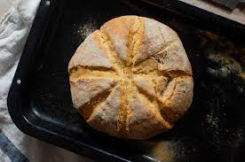

Description

Description
Simple to make and a great little loaf.
Ingredients
- 3 cups S/R Flour
- Pinch of salt
- 80g Butter, chilled, cubed
- 3/4 cup water
Steps
- Preheat oven to 200C. Line a baking tray with non-stick baking paper. Combine flour and salt in a large bowl. Use your fingertips to rub the butter into the flour until the mixture resembles fine breadcrumbs.
- Add the water to the flour mixture and use a knife to mix in a cutting motion, until the mixture just comes together. Add 1-2 extra tbsp of water if the mixture is a little dry. Then use your hands to gently bring it together.
- Turn the dough onto a lightly floured surface and knead until smooth. Shape into a 18cm disc and place on tray. Use a knife that has been dipped in flour to mark 8 wedges on top. Dust the damper with a little extra flour and bake in the oven for 30 mins or until it is cooked through and sounds hollow when tapped on the base. Transfer to a wire rack for 5 mins to cool slightly. Serve warm.